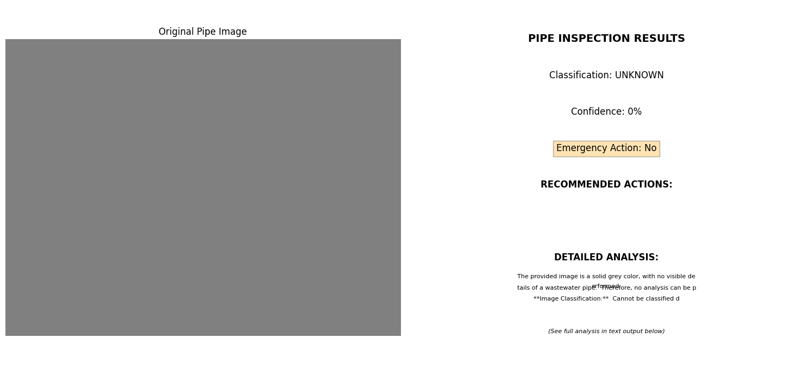

AI in the Sewers: Using GenAI to Analyze and Diagnose Wastewater Systems
1. Introduction: Why Focus on Sewage?
When we talk about exciting applications of artificial intelligence, sewage rarely makes the list. Most people focus on areas like self-driving cars, advanced language models, or biomedical research. But that’s exactly why wastewater systems deserve more attention.
Wastewater infrastructure—including sewer systems, treatment facilities, and supporting networks—operates out of sight and is often under-monitored. But when failures occur, the consequences can be serious for public health, safety, and the environment.
This blog and the accompanying notebook were developed as part of my Kaggle Capstone Project. The work explores a highly underutilized application of GenAI: analyzing and interpreting visual data from sewage infrastructure to support maintenance and diagnosis. Using multimodal models, RAG pipelines, and fallback strategies, I created a prototype pipeline that can help monitor aging infrastructure through AI-driven insights.
2. What the Research Revealed
To inform this project, I conducted a comprehensive review of the literature and industry reports on wastewater systems and infrastructure monitoring.
Wastewater systems present a variety of challenges: corroded pipes, blockages, biofilm formation, sludge buildup, broken baffles, root intrusions, and more. These issues can arise in both centralized sewage networks and decentralized setups. While the system types may vary, the underlying risks and the need for consistent inspection remain the same.
Much of the inspection process today relies on video or photo-based inspections conducted manually by trained professionals. This introduces delays, inconsistencies, and high labor costs. In many cases, municipalities also lack digitized records of their underground infrastructure. All of these gaps point toward opportunities for AI to assist.3. Project Design and Objectives
The project is divided into three primary components:
- Image interpretation of sewer environments using GenAI-powered models
- Visual classification of structural and operational conditions using few-shot prompting
- A decision-support module that performs live grounding against OSHA guidelines or, if needed, falls back to a vector database powered by RAG
These components demonstrate several advanced GenAI capabilities: Multimodal understanding: interpreting images and generating structured descriptions Few-shot classification: adapting quickly to classify new examples with minimal labeled data Grounded decision-making: using live web results or vector search to anchor decisions in verifiable documents The goal is to build a lightweight but extensible system that mirrors what an expert might infer from visual inspections and guidance—augmented by automation.
4. Tools and Libraries Used
This project was implemented using the Gemini Pro Vision AI model (via Google’s Generative AI SDK) for multimodal image captioning and reasoning and Google Generative AI Python SDK for interacting with models. In addition, standard Python libraries were used.
5. Part 1: Image Analysis of Sewer Environments
1.1 Dataset Setup: I began by assembling a dataset of labeled images from sewer inspections—either simulated or sourced from online repositories. These images show various environmental conditions: clean pipes, partial blockages, heavy corrosion, root intrusion, and others.
1.2 Automated Captioning: Each image passed through Gemini Vision for expert-style captioning. I passed each image through a captioning model to generate expert-like natural language descriptions. This step simulates a human inspector describing what they see, such as “light rust formation along pipe wall” or “organic debris obstructing lower third.”
1.3 Few-Shot Classification: I created a few-shot prompt by showing labeled examples of sewer image types—"clean pipe," "partially blocked," etc.—and then asked the model to classify new images. This enables classification with minimal training data and is particularly useful in domains with limited labeled examples.
1.4 Implementation Approach and Error Handling The code implements a comprehensive analysis pipeline rather than a direct model comparison. It uses Gemini Vision models (specifically "gemini-1.5-flash") to process pipe images and generate detailed reports about their condition. The implementation focuses on reliable image processing with structured response extraction, converting the model's natural language analysis into actionable data points. This approach ensures consistent evaluation of pipe conditions regardless of image quality or lighting conditions.Although no longer used in the final pipeline, I had previously implemented a method to download inspection footage automatically. This type of code could be adapted for real-world workflows where images are fetched from internal databases, municipal archives, or public APIs.
To make the tool more robust, I tested it against invalid or nonsensical images. The model’s output here is helpful for verifying whether the AI is capable of gracefully identifying irrelevant or malformed data, instead of returning errors in the command line.
6. Part 2: Visual Assessment of Sewer Conditions
2.1 Prompt Setup: In this section, I introduced a new set of sewer infrastructure images with a wider range of degradation levels. I prepared a new few-shot prompt that taught the model to evaluate conditions such as “routine maintenance,” “moderate degradation,” and “critical failure.”
2.2 Explanation: The model not only returns a classification label, but also includes a confidence level and reasoning chain. For example, it might output: “Moderate degradation (Confidence: 0.8) — due to visible cracking and moderate root intrusion.” This approach encourages transparency in AI reasoning.
2.3 Manual Review: I manually reviewed several classifications for accuracy and interpretability. In many cases, the model correctly identified subtle indicators that aligned with known issues like baffle erosion or joint separation. These results show promise for integration into inspection workflows.
2.4 Interactive Visualization: The project implements a visualization component that presents the analysis results in an intuitive format. I created a two-panel display where one side shows the original pipe image and the other displays a color-coded analysis panel. This visualization highlights the classification result, confidence score, emergency status, and recommended actions. The color scheme changes based on severity: green for intact pipes, orange for issues requiring maintenance, and red for emergency conditions requiring immediate action. This visual approach allows technicians to quickly grasp the condition of the infrastructure and prioritize responses accordingly.
Each image analysis undergoes structured parsing to extract key information including classification type, confidence level, emergency status, and actionable recommendations. The system converts the model's natural language output into a structured format that can be easily integrated with existing maintenance systems. This structured approach ensures consistency in reporting and facilitates data-driven decision making across maintenance teams. The parsing function is designed to be robust, handling various response formats while extracting the most critical information for maintenance planning.
7. Part 3: Grounded Decision-Making Using Live and Local Search
3.1 Safety Assistant Framework: The third component of the project focuses on providing safety guidance to technicians based on inspection findings. This module integrates both web search capabilities and local vector database retrieval to ensure technicians have access to relevant safety information even when connectivity is limited. The system is designed to analyze the context of the inspection results and generate appropriate safety queries automatically.
3.2 Web Search Integration: When possible, the system uses Google's GenerativeAI SDK to perform web searches for the most up-to-date safety information from authoritative sources like OSHA. This allows the system to ground its recommendations in current regulations and industry best practices. The search functionality is configured with specialized prompts that focus on wastewater infrastructure safety, ensuring relevant results that address the specific hazards technicians might encounter.
3.3 RAG Fallback Mechanism: Recognizing that field operations may have limited connectivity, I implemented a robust fallback mechanism using Retrieval Augmented Generation (RAG) with a local vector database. The system stores critical safety documents including confined space regulations, PPE requirements, and emergency procedures in a ChromaDB collection. When web search is unavailable due to connectivity issues or rate limits, the system seamlessly transitions to this local knowledge base.
3.4 Contextual Query Generation: One of the system's key features is its ability to generate contextually appropriate safety queries based on inspection findings. For example, if image analysis detects corrosion, the system automatically formulates questions about corrosion-related hazards and appropriate safety measures. This eliminates the need for technicians to manually search for safety information, saving time and ensuring critical safety protocols aren't overlooked.
3.5 Comprehensive Maintenance Report & Structured Output Generation: The final component integrates findings from both image analysis and safety guidance to generate comprehensive maintenance reports. These reports include an executive summary, detailed findings, severity assessment, recommended actions with timelines, required personnel and equipment, cost estimates, and safety considerations. The system formats this information in a professional, structured document that can be shared with stakeholders at all levels.
Beyond narrative reports, the system can also generate structured JSON outputs that conform to predefined schemas. This structured approach facilitates integration with existing maintenance management systems and enables automated workflow triggering based on inspection results. For instance, critical findings can automatically generate work orders or alert appropriate personnel through existing systems.
To enhance usability, the system includes visual formatting for reports that dynamically adjusts based on severity. Emergency issues are highlighted with red banners, while routine maintenance items appear with green styling. The reports include clearly delineated sections with appropriate headers, making them easy to scan and comprehend quickly. This visual hierarchy ensures that the most critical information stands out, improving response times for urgent issues.
8. Why This Work Matters
Wastewater systems are largely invisible until something goes wrong. But when they do fail, the costs—financial, ecological, and human—can be immense. AI offers a way to intervene earlier and with greater precision.
This project is a prototype. It shows that even with limited data and infrastructure, GenAI can be leveraged to assist with monitoring complex, low-visibility domains like sewage systems. By combining multimodal input, few-shot reasoning, and grounded search, I demonstrate a practical use case for how AI can support aging infrastructure.
Future improvements might include larger datasets, full video analysis pipelines, and tighter integration with municipal GIS systems.
If we want to build smarter, safer cities, we need smarter infrastructure tools—and AI is part of that toolkit.